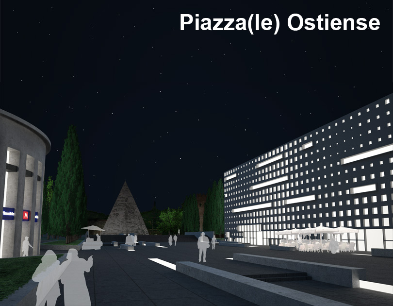

|  |
Intervention on the Outskirts of the Eternal City
While Rome is known for its city fabric layered over many centuries, the integration of automobiles has been problematic in many places in and around the historic center. The issue is most evident in large transportation squares often called piazzale.
Piazzale Ostiense is a particularly chaotic example just outside of the Aurelian Walls. An intersection of seven roads with cars, buses, trams, and scooters converging from all directions makes getting around not only difficult but dangerous.
In spite of the chaos, the piazza is always bustling with people. A metro station, taxi area, and two nearby train stations means that there are always people circulating. Additionally, the presence of the 2200 year old Piramide di Caio Cestio and nearly as ancient Porta San Paolo bring tourists to the area.
Location |
Rome, Italy |
Year |
Fall 2009 |
Type |
Academic (Fourth Year) |
Program |
Public space with parking garage & retail |
ProgramAlong with the traffic solution, additional programs are integrated into the piazza. Retail, performance, and exhibition areas support the already vibrant nature of this locus. |